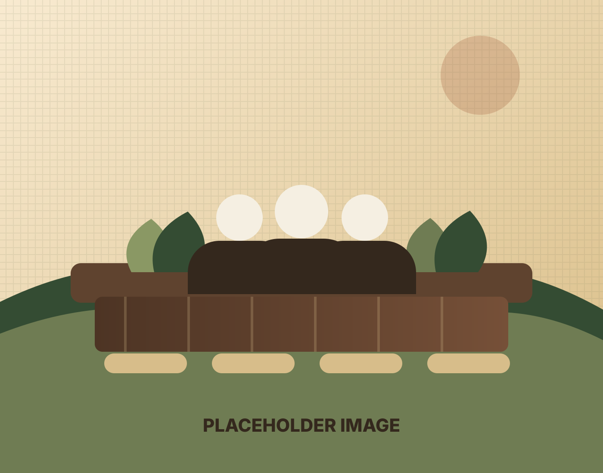
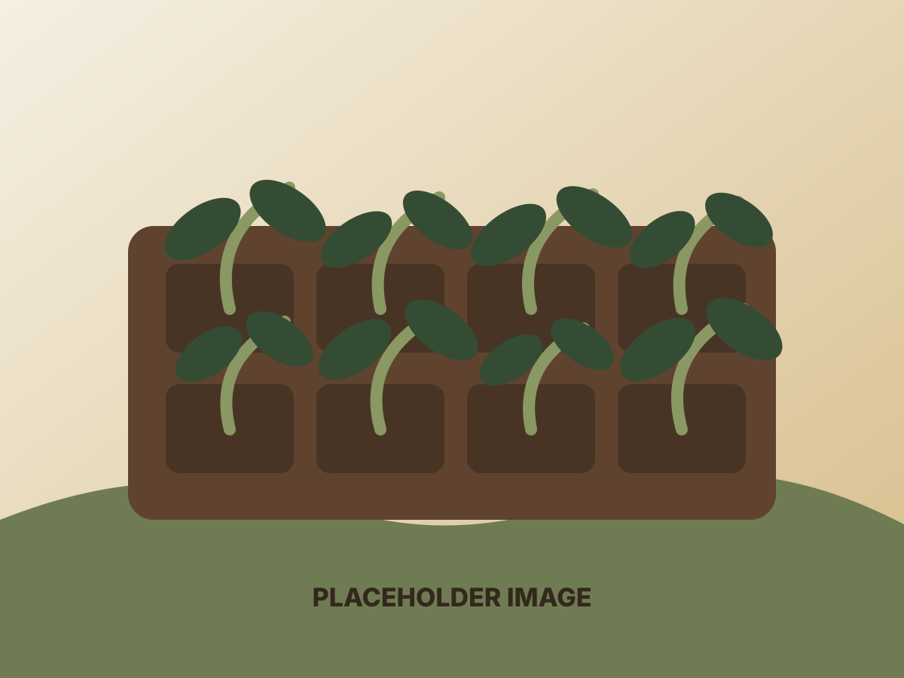
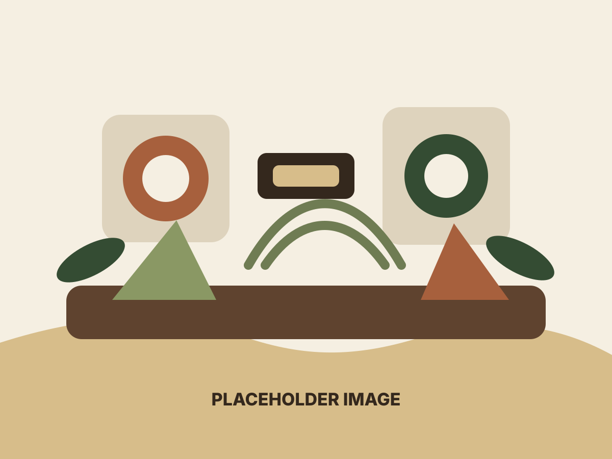
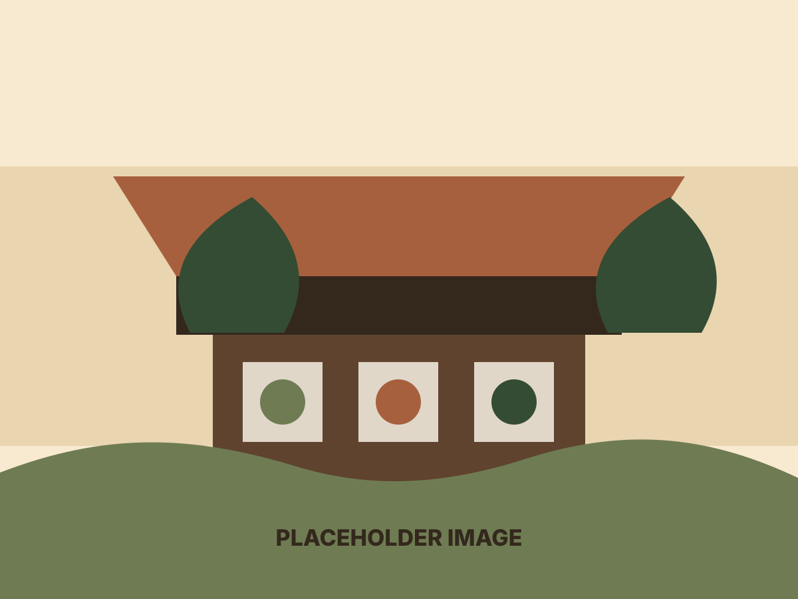

Placeholder imageColorado Springs area. Hands-on learning.
Learning by growing, making, selling, and doing.
Philosotribe is our Colorado Springs-area family space for practical learning. We teach our kids through real experience: gardening, business habits, craft skills, problem solving, and the steady work of making useful things by hand.
What we practice
A homegrown education rooted in useful work.
Our projects give the kids room to try, observe, ask better questions, and build confidence. Some days that means seedlings and soil. Other days it means planning a product, finishing a craft, packaging an order, or learning how a small family business serves real people.
Focus areas
The work changes with the season.

Plants
Gardening and growing
Seed starting, tending plants, harvesting, composting, and learning how small choices affect living systems.
See plant projects
Crafts
Making with care
Simple materials become finished goods as the kids practice patience, design, measuring, finishing, and presentation.
View craft showcase
Business
Real-world habits
Pricing, customer care, inventory, photos, descriptions, and follow-through become part of the lesson.
Contact usPlant care
Local starter plant care notes.
Bringing home one of our starter plants? Use the Plant Care page for Colorado Springs-focused watering, soil, transplanting, and harvest timing guidance.
Family rhythm
Curiosity first, then practice.
We are building a record of the projects, skills, and small wins that come from learning together. The site is meant to grow slowly with us while the Etsy shop stays focused on available handmade items.
Browse the showcaseThings to add later
- Current garden photos
- Favorite craft projects
- Seasonal market updates
- Short notes from the kids